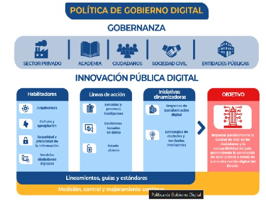

OBJETIVO POLITICA DE GOBIERNO DIGITAL
-
Inicio
Impactar positivamente la calidad de vida de los ciudadanos y, en general, los habitantes del territorio nacional y la competitividad del país, promoviendo la generación de valor público a través de la transformación digital del Estado, de manera proactiva, confiable, articulada y colaborativa entre los Grupos de Interés y permitir el ejercicio de los derechos de los usuarios del ciberespacio.
ELEMENTOS QUE COMPONEN LA ESTRUCTURA DE LA POLITICA DE GOBIERNO DIGITAL
- GOBERNANZA:Se basa el relacionamiento entre el orden nacional y territorial, y el nivel central y descentralizado. Asimismo, involucra a los grupos de interés en la toma de decisiones, la definición de los focos estratégicos de acción y la distribución de los recursos disponibles.
- INNOVACION PUBLICA DIGITAL: La Política de Gobierno Digital propenderá por la generación de valor público a través de la introducción de soluciones novedosas y creativas que hagan uso de las TIC y de metodologías de innovación, para resolver problemáticas públicas desde una perspectiva centrada en los ciudadanos.
- HABILITADORES: Corresponde a las capacidades que les permitan ejecutar las Líneas de Acción de la Política de Gobierno Digital
- LINEAS DE ACCION: Son las acciones orientadas a desarrollar servicios y procesos inteligentes, tomar decisiones basadas en datos y consolidar un Estado abierto, con el fin de articular las Iniciativas Dinamizadoras de la Política de Gobierno Digital. Estas Líneas de Acción se materializarán en las sedes electrónicas de cada uno de los sujetos obligados, siguiendo los estándares señalados para tal fin.
- INICIATIVAS DINAMIZADORAS: Las iniciativas dinamizadoras comprenden los Proyectos de Transformación Digital y las Estrategias de Ciudades y Territorios Inteligentes, que materializan las Líneas de acción y permiten dar cumplimiento al objetivo de la Política.

CONTACTANOS